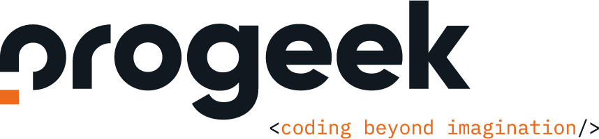

Angewandte Informatik
Informatikstudium an der Hochschule Flensburg
Über mich 👋

Cedrik Hoffmann
- 24 Jahre
- Student Angewandte Informatik (B.Sc.)
- 9. Semester
- Abgeschlossene Ausbildung Fachinformatiker Systemintegration
- Werkstudent bei PROGEEK GmbH
Der Campus

Der Campus
Angewandte Informatik
- Entwicklung von Software in allen Varianten
- Sicher und benutzerfreundliche Software-Applikationen
Angewandte Informatik
- Entwicklung von Software in allen Varianten
- Sicher und benutzerfreundliche Software-Applikationen
- Dauer
7 Semester - Abschluss
Bachelor of Science (B.Sc.) - Zulassung
Allg. Hochschulreife (Abitur), Fachhochschulreife oder eine als gleichwertige anerkannte Ausbildung
Ablauf
- Vorlesung
Dozenten hält einen Vortrag - Labore / Übungen
Fasst jede Vorlesung wird durch Laborübungen begleitet. Wissen von Vorlesung wird praktisch umgesetzt - Klausur / Hausarbeit
Wissen wird in einer schriftlichen Form oder in einem Projekt geprüft - 7. Semester
Betriebspraktikum und Bachelorthesis
Modulplan

Schwerpunkte
Schwerpunkte
- IT-Security
Software und Kommunikation sicher machen und vor Angriffen schützen
Schwerpunkte
- IT-Security
Software und Kommunikation sicher machen und vor Angriffen schützen - Human-Computer-Interaction
Wie benutzbare Software entwickeln mit guter Usability
Schwerpunkte
- IT-Security
Software und Kommunikation sicher machen und vor Angriffen schützen - Human-Computer-Interaction
Wie benutzbare Software entwickeln mit guter Usability - Web- und Softwaretechnologien
Strukturierte und effiziente Programme entwickeln
Hausarbeiten
Interface und Interaktionsdesign
1. Semester
Objektorientierte Programmierung
2. Semester
Digitale Signalverarbeitung
3. Semester
Hausarbeit
3D-Engine Technology (4. Semester)
Deklarative Softwaretechnologie
6. Semester
Projekt
6. Semester (Budget Binder)
Zukunftsperspektive
Zukunftsperspektive
Unsere Absolventinnen und Absolventen arbeiten zum Beispiel in diesen Jobs:
- Pentester
- DevOpsSec
- Security Researcher/Consultant
Und zwar vor allem in diesen Bereichen:
- Frontend-Entwicklung
- Software-Qualitätssicherung
- System-Administration
- Backend-Entwicklung
- App-Entwicklung
Zukunftsperspektive
Unsere Absolventinnen und Absolventen arbeiten zum Beispiel in diesen Jobs:
- Pentester
- DevOpsSec
- Security Researcher/Consultant
Und zwar vor allem in diesen Bereichen:
- Frontend-Entwicklung
- Software-Qualitätssicherung
- System-Administration
- Backend-Entwicklung
- App-Entwicklung
arrow_forward
Master Studium
Angewandte Informatik
Mein Beruf 👨💻
Mein Beruf 👨💻
Mein Beruf 👨💻
Was macht PROGEEK?
- Aufgabengebiet
Individuelle Softwareentwicklung,
Power-Add-On bestehenden Teams,
Devops - Sitz in
Flensburg, Technologiezentrum (liesezwei)
Mein Beruf 👨💻
Was mache ich?
- Angestellt als
Softwareentwickler - Meine Aufgaben
Entwicklung in Front- und Backend,
DevOps,
Mein Beruf 👨💻
Was ist ein Werksstudent?
- Zahlt weniger Steuern
- Darf max. 20h im monat arbeiten
- In Semesterferien max. 40h
- Gehaltstechnisch nicht gebunden (Minijob)
Meine Erkenntnisse
Meine Erkenntnisse
- Im Berufsleben
Vieles vom Studium kann ich bereits anwenden. - Ausbildung vorher hat geholfen
Durch meine Ausbildung hatte ich es auf jeden Fall leichter (auch im Bezug aufs Berufsleben). - Keine Vorkenntnisse erforderlich
Aber auch nicht absolut keine Ahnung von IT haben. - Selber Wissen aneignen
Manchmal muss über die Vorlesung hinaus selber Wissen aneignet werden. - Studium ist ein Vollzeitjob
Man hat viel Freizeit, muss aber auch viel tun.
Kein Fan von Angewandter Informatik?
Kein Fan von Angewandter Informatik?
- Medieninformatik
Mehr mit Medien. Schwerpunkte Programmierung oder Film - Wirtschaftsinformatik
Informatik im Zusammenhang mit Wirtschaft
Interesse?

Marc Laatzke
Studienberatung
Danke!

Nützliche Links
-
Präsentation
https://choffmann.github.io/presentation-ai-eckener -
Website Hochschule Flensburg
https://hs-flensburg.de/studieninteressierte/angebot/bachelor/AI -
Hochschule Flensburg Studienberatung
https://hs-flensburg.de/hochschule/abteilung/studienberatung -
PROGEEK GmbH
https://progeek.de